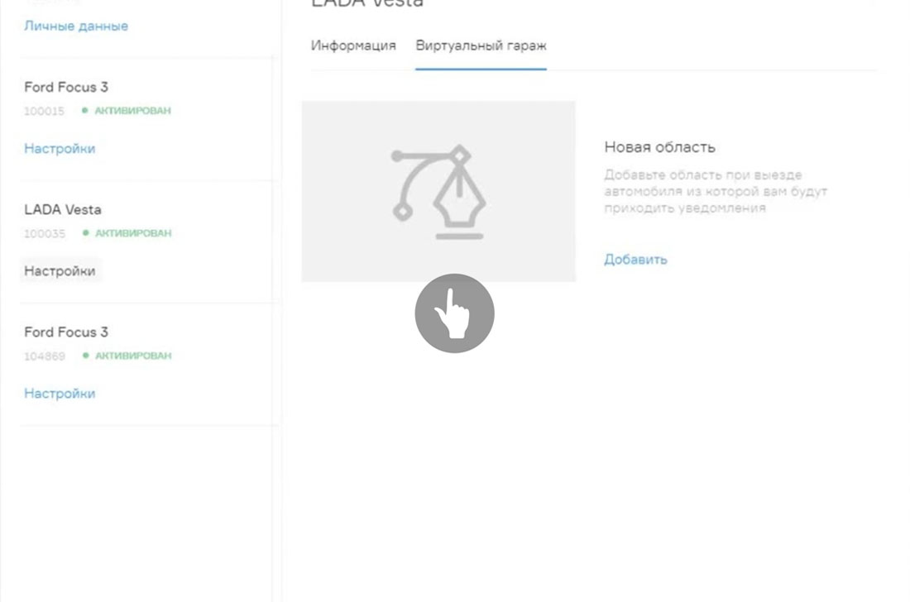

Много лет наша компания была надёжным партнёром дизайн студий и проектировщиков интерфейсов, доводя решения до состояния продукта.
Биоинформационная система нового поколения, соединяющая в себе облачную картотеку биообразцов и электронную историю болезни пациентов. Предназначена для сбора, анализа и визуализации больших массивов клинических данных, необходимых при разработке лекарственных препаратов, особенно для так называемых "редких болезней".
Теперь наша очередь обратиться к вам: нужен хороший дизайнер интерфейсов.
Наш идеальный кандидат:
- имеет мощный бэкграунд в дизайне мобильных приложений, сайтов, смежных digital-продуктов и может подтвердить его солидным портфолио;
- перфекционист в деталях, стремится к простоте и ясности интерфейсных решений;
- не рисует картинки, а проектирует пользовательский опыт и транслирует идеи в виде прототипов;
- может презентовать интерфейсные идеи в виде аниматиков;
- работает быстро и умеет соблюдать дедлайны;
- любит критику, которая позволяет сделать дизайн лучше;
- хорошо знает инструментарий (Photoshop, Indesign, Sketch, Invision, Principle, After Effects и.т.д.);
- имеет представление о технологической стороне реализации дизайна;
- понимает особенности платформ (iOS / Android).
Обязанности:
- бесконечное улучшение существующих продуктов компании (приложения, сайты);
- проектирование и разработка дизайна нового функционала;
- тесная работа в связке с арт-директором и маркетинг-директором.
-

Пример работы интерфейса выделения области карты для Виртуального гаража.
-

At Intel, our vision for the evolution of the IoT happens in three stages – first, we must connect the unconnected.
-
Пример работы интерфейса выделения области карты для Виртуального гаража.
-
Пример работы интерфейса выделения области карты для Виртуального гаража.
Как с нами связаться
Статьи в тему
- Микросервисы завоевывают FMCG 17 июля '17 В апреле компания PepsiCo запустила акселератор для стартапов - PepsiCo LAB, цель которого – создание взаимовыгодного партнерства компании со стартапами.
- Мы получили международные сертификаты качества 16 июля '17 Чтобы подтвердить, что деятельность вашей организации удовлетворяет стандартам ISO, необходимо пройти сертификацию в рамках национальной или одной из добровольных систем сертификации систем менеджмента.
- Резидентство в инновационном кластере Technounity 12 июля '17 14 июля завершился финальный этап отбора участников в Акселератор PepsiCo Tech LAB. Всего несколько команд успешно миновали все модули Предакселератора, получили наиболее высокие баллы за выполнение заданий, и.
- Мы получили международные сертификаты качества 16 июля '17 Чтобы подтвердить, что деятельность вашей организации удовлетворяет стандартам ISO, необходимо пройти сертификацию в рамках национальной или одной из добровольных систем сертификации систем менеджмента.
- Мы получили международные сертификаты качества 16 июля '17 Чтобы подтвердить, что деятельность вашей организации удовлетворяет стандартам ISO, необходимо пройти сертификацию в рамках национальной или одной из добровольных систем сертификации систем менеджмента.